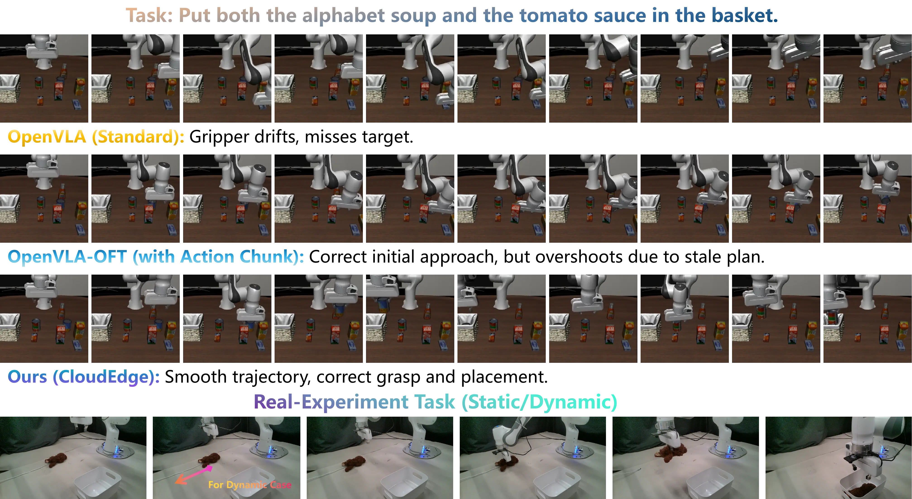
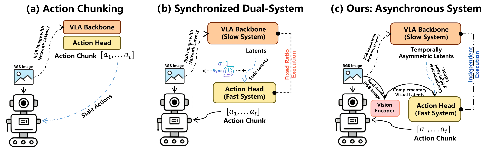
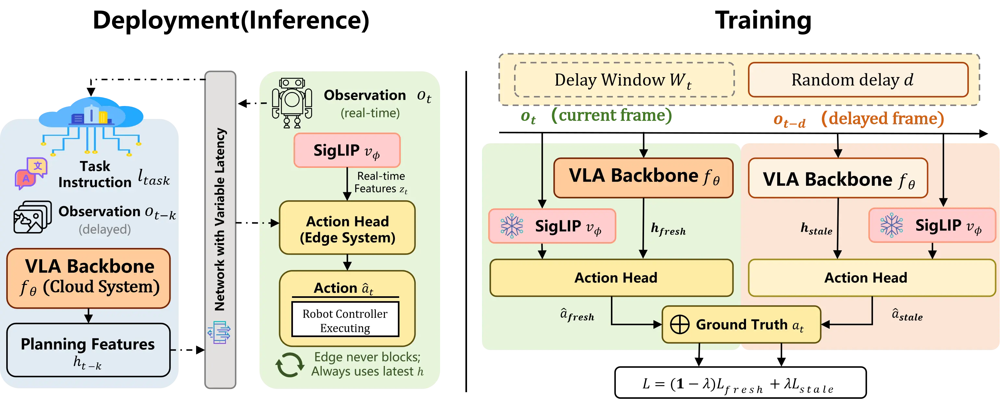
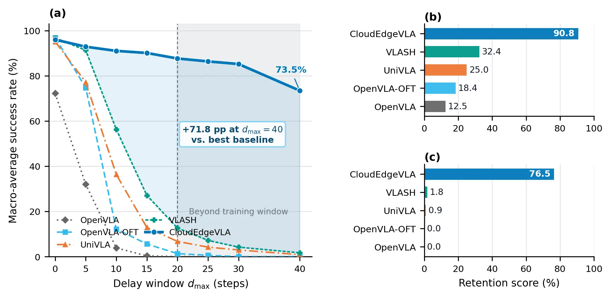
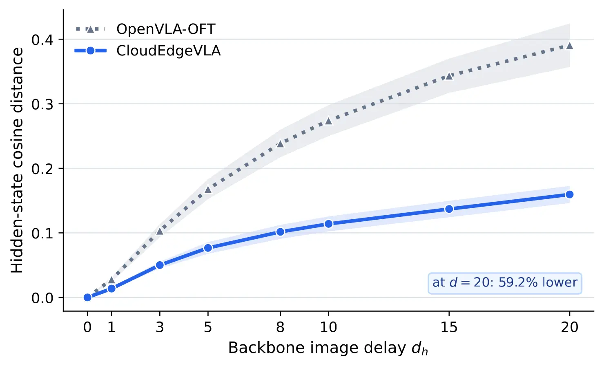
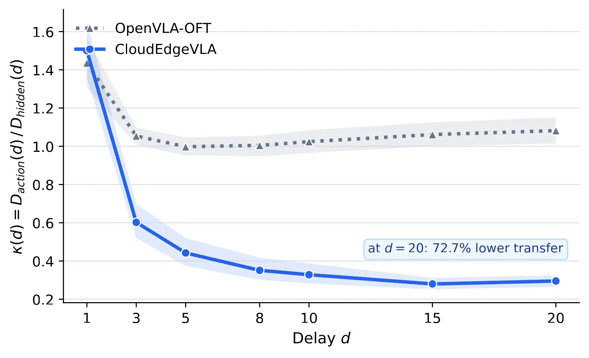

Non-blocking control
The edge always acts with the newest feature it has; it never waits for a particular cloud response.

AAAI 2027 · Under Review
Cloud reasoning. Edge reflexes. No waiting.
Latency-Tolerant Cloud-Edge Collaborative Vision-Language-Action Models via Emergent Representational Specialization
1HKUST(GZ) 2Shandong University 3RoboScience †Corresponding author
Abstract
Deploying billion-parameter VLA policies on mobile robots creates a systems conflict: semantic reasoning benefits from cloud GPUs, while closed-loop control must respond locally despite delay and jitter.
CloudEdgeVLA separates information by temporal role. A cloud VLA turns delayed observations into slowly varying task features, while a lightweight edge head grounds the latest available feature with current local vision. Paired-frame dual-path training teaches both fresh and delayed cloud features to predict the current action, encouraging temporal specialization without requiring delay metadata at inference.
The edge always acts with the newest feature it has; it never waits for a particular cloud response.
Fresh and randomly delayed cloud frames share the same current action target.
The cloud preserves task context while the edge supplies state-sensitive corrections.
The deployment gap
Action chunks grow stale, and synchronized fast-slow systems still assume bounded timing. CloudEdgeVLA makes cloud updates independent from the edge control clock.

Architecture
A single learned interface separates latency-insensitive planning from latency-sensitive control, allowing both sides to scale on their own cadence.

Cloud · System 2
The 7B VLA backbone processes a delayed observation and language instruction into reusable planning features.
ht-k = fθ(ot-k, ℓ)
Edge · System 1
A frozen lightweight SigLIP encoder observes the current frame locally, with no network delay in its signal.
zt = vψ(ot)
Action · Closed loop
The edge action head fuses old task context with current visual evidence and executes immediately.
ât = gφ(ht-k, zt)
Paired-frame dual-path training
For each current frame, training samples a delayed frame from the same episode. Both cloud features are fused with the same current edge vision and supervised toward the same current action.
No explicit invariance loss. No delay value is required at inference.
LIBERO results
Explore success rates across four LIBERO suites. The dmax = 0 point is the synchronous reference; each non-zero setting samples observation age uniformly from 1 to dmax. CloudEdgeVLA values average three seeds.
+71.8 points over the best baseline at 40 steps, averaged across all suites.
Beyond the training window
| Method | Delay | Spatial | Object | Goal | Long |
|---|---|---|---|---|---|
| OpenVLA | 0 | 84.6 | 71.2 | 77.0 | 56.2 |
| 10 | 6.8 | 1.2 | 2.2 | 5.2 | |
| 20 | 0.2 | 0.0 | 0.0 | 0.0 | |
| 40 | 0.0 | 0.0 | 0.0 | 0.0 | |
| OpenVLA-OFT | 0 | 98.4 | 98.6 | 97.2 | 93.4 |
| 10 | 10.6 | 3.6 | 26.2 | 8.4 | |
| 20 | 0.0 | 0.0 | 4.0 | 1.4 | |
| 40 | 0.0 | 0.0 | 0.0 | 0.0 | |
| UniVLA | 0 | 96.0 | 96.6 | 94.6 | 93.2 |
| 10 | 27.4 | 34.8 | 48.2 | 35.0 | |
| 20 | 0.4 | 2.6 | 21.8 | 2.2 | |
| 40 | 0.0 | 0.0 | 3.0 | 0.5 | |
| VLASH | 0 | 97.3 | 99.6 | 96.7 | 93.5 |
| 10 | 60.0 | 62.8 | 56.8 | 45.6 | |
| 20 | 5.0 | 8.2 | 28.2 | 9.2 | |
| 40 | 0.0 | 0.4 | 6.4 | 0.0 | |
| CloudEdgeVLA | 0 | 97.9 | 97.8 | 96.5 | 91.7 |
| 10 | 93.6 | 94.4 | 92.9 | 83.2 | |
| 20 | 89.6 | 92.1 | 90.9 | 78.1 | |
| 40 | 76.4 | 75.6 | 78.0 | 63.8 |
CloudEdgeVLA values are means over seeds 7, 8, and 9. Standard deviations are reported in the paper.
Why it works
Under a 20-step delay, the learned cloud representation changes less, and the edge head transfers less residual feature drift into the executed action.


Real-world deployment
A Franka robot places a toy bear into a box in static and dynamic-target settings. The cloud 7B backbone runs on an RTX 4090; edge vision, action head, and control run on an RTX 5080 workstation.
| Added RTT | VLASH | CloudEdgeVLA |
|---|---|---|
| 0 ms | 100 / 90 | 100 / 90 |
| 400 ms | 60 / 30 | 90 / 90 |
| 1,000 ms | 0 / 0 | 80 / 70 |
Each cell reports static / dynamic success over 10 trials per variant; added RTT is emulated on top of the native serving pipeline.
Citation
Please cite the paper if this work supports your research.
@misc{peng2026latencytolerantcloudedgecollaborativevisionlanguageaction,
title = {Latency-Tolerant Cloud-Edge Collaborative
Vision-Language-Action Models via Emergent
Representational Specialization},
author = {Daojie Peng and Fulong Ma and Bingtao Wang
and Sheng Wang and Jun Ma},
year = {2026},
eprint = {2608.00569},
archivePrefix = {arXiv},
primaryClass = {cs.RO},
url = {https://arxiv.org/abs/2608.00569}
}